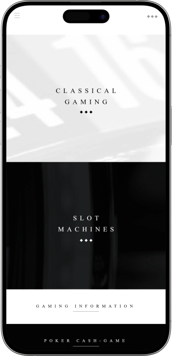
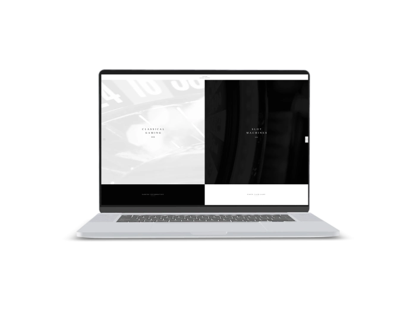

Exklusives Willkommensangebot von
Exklusives Willkommensangebot von
Casino Baden-Baden — legendäres Casino im Kurhaus mit Roulette, Black Jack, Poker, Jackpot Slots, The Grill und Club Bernstein
Top-Casino
Bonusdetails
Casino
Boni
Rate
Frei Spins
Mehr Infos
Erhalten
Vorteile
- Im Casino Baden-Baden verbinden wir klassische Spielkultur, elegante Räume und ein hochwertiges Abendprogramm.
-
Roulette mit klassischen Auszahlungen bis 35:1
-
Black Jack mit Einsätzen bis 1000€
-
Mystery Jackpots jederzeit im passenden Spiel
-
10€ Glücksjetons inklusive in ausgewählten Genuss-Paketen
-
The Grill für Dinner vor dem Spiel
-
Club Bernstein für stilvolle Nächte am Samstag
-
Historische Kurhaus-Säle mit lebendiger Casino-Atmosphäre pur
- Unser Casino ist ideal für Spiel, Dinner, Clubnacht, Führungen und besondere Anlässe in einem einzigartigen Ambiente. Wir gestalten jeden Besuch als stilvolles Erlebnis mit persönlichem Service, Atmosphäre und Spannung.
Casino Baden-Baden App



Über das Casino Baden-Baden
Im Casino Baden-Baden verbinden wir traditionsreiche Live-Spiele mit modernen Automaten, Mystery Jackpots und Progressive Jackpots. Unser Casino macht den Spielabend zu einem eleganten Erlebnis aus Dinner, Club, Service und Kurhaus-Flair.
- Roulette: Auszahlung 35:1.
- Black Jack: bis 1000€.
- Glücksjetons: 10€ inklusive.
Im Casino Baden-Baden empfangen wir unsere Gäste mit klassischer Eleganz, Spielkultur und besonderem Kurhaus-Ambiente. Unsere historischen Säle schaffen den Rahmen für einen Abend, der stilvoll beginnt und lange in Erinnerung bleibt. Wir verbinden Roulette, Black Jack, Poker und moderne Automaten zu einem vielseitigen Casino-Erlebnis.

Unsere Croupiers begleiten das Spiel professionell, aufmerksam und mit einem sicheren Gespür für Atmosphäre. Ein Besuch lässt sich ideal mit einem Dinner im The Grill kombinieren, wo Genuss und Casino-Flair zusammenfinden. Für den späteren Abend bringt der Club Bernstein Musik, Champagner-Stimmung und ein elegantes Nachtleben ins Haus. Wer die Welt des Spiels kennenlernen möchte, entdeckt bei uns Führungen, Spielerklärungen und besondere Erlebnisformate. Unsere Gutscheine und Arrangements machen den Abend planbar, hochwertig und besonders komfortabel. Casino Baden-Baden eignet sich für einen festlichen Anlass, einen stilvollen Ausflug oder eine außergewöhnliche Nacht. Wir schaffen ein Erlebnis, in dem Spiel, Genuss, Geschichte und Unterhaltung harmonisch zusammenwirken.
Casino Baden-Baden:Öffnungszeiten, Zahlungsmethoden und Treueprogramm
Casino Baden-Baden: Kurhaus-Glanz, Live-Spiel und stilvolle Nächte
Im Casino Baden-Baden gestalten wir einen Abend, der klassische Spielkultur, historische Architektur und moderne Unterhaltung elegant verbindet. Unsere Säle im Kurhaus schaffen ein Ambiente voller Belle-Époque-Charme, edler Details und lebendiger Casino-Atmosphäre. Im Klassischen Spiel erleben Gäste Roulette, Black Jack, Ultimate Texas Hold’em und Poker Cash-Game, während der Automatenbereich moderne Slots, Multi-Games, elektronische Formate und Jackpot-Spannung bereithält. Roulette beginnt täglich ab 15:00 Uhr und bildet den stilvollen Einstieg in den Spielabend. Black Jack startet sonntags bereits ab 15:00 Uhr, an den übrigen Spieltagen im späteren Nachmittags- und Abendformat. Unser Automatenbereich öffnet früher und bietet damit besonders flexible Besuchsmöglichkeiten ab 11:00 Uhr. The Grill ergänzt das Casino-Erlebnis mit Sushi, Beef, Drinks und einer urban-eleganten Atmosphäre mitten im Haus. Club Bernstein bringt samstags Musik, Champagner-Stimmung, Tanz und ein exklusives Nachtgefühl in den Abend. Für besondere Anlässe bieten wir Führungen, Spielerklärungen, Prime-Time-Erlebnisse, Restaurantgutscheine und sorgfältig zusammengestellte Arrangements. Gäste können Spiel, Dinner, Drinks, Glücksjetons und Hotelaufenthalt zu einem hochwertigen Erlebnis kombinieren. Für private und geschäftliche Veranstaltungen stehen besondere Räume wie Salon Marlene, Florentiner Saal, Saal Bénazet, Pavillon, Club Bernstein und The Grill zur Verfügung. Casino Baden-Baden ist unser Ort für Spiel, Genuss, Geschichte, Events und elegante Abendunterhaltung.
| Zone | Tage | Zeit |
|---|---|---|
| Roulette | Sonntag – Donnerstag | 15:00 – 02:00 |
| Roulette | Freitag & Samstag | 15:00 – 03:00 |
| Black Jack | Sonntag | 15:00 – 02:00 |
| Black Jack | Montag – Donnerstag | 17:00 – 02:00 |
| Black Jack | Freitag & Samstag | 17:00 – 03:00 |
| Ultimate Texas Hold’em | Sonntag | 15:00 – 02:00 |
| Ultimate Texas Hold’em | Montag – Donnerstag | 17:00 – 02:00 |
| Ultimate Texas Hold’em | Freitag & Samstag | 17:00 – 03:00 |
| Poker Cash-Game | Sonntag – Donnerstag | ab 19:00 |
| Automatenspiel | Sonntag – Donnerstag | 11:00 – 02:00 |
| Automatenspiel | Freitag & Samstag | 11:00 – 03:00 |
| The Grill | Sonntag – Donnerstag | 15:00 – 02:00 |
| The Grill | Freitag & Samstag | 15:00 – 03:00 |
| Club Bernstein | Samstag | 20:00 – 03:30 |
Casino Baden-Baden: Service, Währung, Zahlungen und Gewinne
Im Casino Baden-Baden legen wir großen Wert auf persönlichen Service, denn ein stilvoller Abend beginnt für uns bereits am Empfang. Unser Team unterstützt Gäste beim Eintritt, bei der Orientierung im Haus, bei Reservierungen, bei Fragen zu Spielbereichen und bei der Planung eines besonderen Besuchs. An den Tischen sorgen erfahrene Croupiers für einen professionellen Ablauf, eine angenehme Spielgeschwindigkeit und eine souveräne Atmosphäre. Gäste, die Roulette, Black Jack oder Poker kennenlernen möchten, können bei uns Spielerklärungen und just-for-fun-Formate ohne reale geldwerte Einsätze erleben. Die Kommunikation erfolgt vor allem auf Deutsch und Englisch; bei individuellen Anliegen hilft unser Team dabei, den passenden Serviceweg zu finden.
Die zentrale Spielwährung im Casino Baden-Baden ist der Euro, wodurch Jetons, Einsätze, Eintritt und Restaurantleistungen klar und transparent bleiben. Gäste können bei uns bar bezahlen und außerdem gängige Bankkarten nutzen, darunter Visa, MasterCard und EC-Karten. Unsere Rezeption und Kasse unterstützen beim Erwerb von Jetons, bei Gutscheinen, Arrangements und Fragen zu den Spielzonen. Für Genussmomente stehen Restaurantgutscheine zur Verfügung, die Menü, Getränke, freien Eintritt in das Klassische Spiel und Glücksjetons kombinieren können. So lässt sich der Abend flexibel planen — vom kurzen Spielbesuch bis zum Dinner mit anschließendem Cluberlebnis.
Bei Fragen zu Bargeld, Geldautomaten oder Währungswechsel hilft unser Team vor Ort mit aktuellen Informationen zu verfügbaren Services im Haus und in der Nähe. Wir empfehlen, vor dem Besuch eine passende Zahlungsoption einzuplanen, besonders wenn Spiel, Restaurant, Club, Drinks oder Geschenk-Jetons kombiniert werden sollen. An der Kasse können Gäste Jetons wechseln und den Ablauf nach dem Spiel klären. Für Geschenke bieten wir echte Jetons in frei wählbarer Höhe an, auf Wunsch stilvoll verpackt im roten Samtsäckchen. Diese Form eignet sich besonders für Einladungen, festliche Anlässe und elegante Überraschungen.
Die Auszahlung von Gewinnen erfolgt im Casino Baden-Baden vor Ort über die Kasse oder die zuständige Spielzone nach Abschluss des Spiels und Wechsel der Jetons. Im Klassischen Spiel legt der Gast die Jetons vor, anschließend erfolgt die Abrechnung nach den geltenden Kassenregeln. Bei höheren Beträgen können zusätzliche Schritte zur Sicherheit, Identifikation und ordnungsgemäßen Abwicklung erforderlich sein. Für private Gäste gelten Gewinne aus dem Gelegenheitsspiel in der Regel nicht als steuerpflichtiges Einkommen, solange keine berufsmäßige Spieltätigkeit vorliegt. Bei individuellen steuerlichen Fragen empfehlen wir, die persönliche Situation gesondert prüfen zu lassen.
Casino Baden-Baden: Eintritt, Dresscode und komfortable Anreise
Im Casino Baden-Baden empfangen wir unsere Gäste in einem eleganten Ambiente, deshalb sorgen klare Besuchsregeln für Stil, Komfort und Sicherheit. Der Eintritt in unser Casino ist ab 21 Jahren möglich. Für den Besuch benötigen Gäste einen gültigen Reisepass oder Personalausweis im Original. Ein Foto auf dem Smartphone, eine Kopie oder ein digitales Bild ersetzt das Originaldokument nicht. Für das Klassische Spiel bitten wir um gepflegte, dem Haus angemessene Garderobe. Herren tragen lange Hose und Sakko; Hemd und Krawatte sind ausdrücklich erwünscht. Bei einem spontanen Besuch kann an der Rezeption ein Sakko für 10€ ausgeliehen werden. Für das Automatenspiel ist gepflegte Freizeitkleidung passend. Sport- und Funktionsschuhe, offene Schuhe, bedruckte mehrfarbige Freizeit-Shirts, Sportkleidung und Flip-Flops passen nicht zum Stil des Klassischen Spiels. Wir empfehlen eine frühzeitige Planung, besonders wenn der Besuch mit The Grill, Club Bernstein, Poker Cash-Game oder einem privaten Erlebnis verbunden werden soll. Casino Baden-Baden ist bequem mit Auto, Taxi, öffentlichen Verkehrsmitteln oder zu Fuß erreichbar. Direkt am Kurhaus steht die Kurhausgarage als komfortable Parkmöglichkeit mit wettergeschütztem Zugang zur Verfügung.
Dresscode im Casino Baden-Baden
- • Klassisches Spiel: Gepflegte Abendgarderobe, für Herren lange Hose und Sakko; Hemd und Krawatte sind erwünscht.
- • Automatenspiel: Gepflegte Freizeitkleidung und ein stilvoller Smart-Casual-Look passen ideal.
- • Spontaner Besuch: Ein Sakko kann an der Rezeption für 10€ ausgeliehen werden.
Eintrittsbedingungen im Casino Baden-Baden
- • Mindestalter: Der Eintritt ist ab 21 Jahren möglich.
- • Ausweis: Reisepass oder Personalausweis muss im Original vorgelegt werden.
- • Empfang: Der Zugang erfolgt über die Rezeption, wo unser Team bei Fragen unterstützt.
Wichtige Hinweise für den Besuch
- • Stil des Hauses: Das Klassische Spiel ist eleganter ausgerichtet als der Automatenbereich.
- • Sicherheit: Die Einlassregeln sichern eine angenehme und geschützte Atmosphäre.
- • Reservierung: Für The Grill, Club Bernstein, Poker Cash-Game und VIP-Erlebnisse ist Planung empfehlenswert.
Parken und Anreise zum Casino Baden-Baden
- • Kurhausgarage: Die Tiefgarage liegt direkt am Kurhaus und bietet komfortables Parken.
- • Zugang: Der Weg ins Haus ist bequem und wettergeschützt möglich.
- • Adresse: Casino Baden-Baden befindet sich im Kurhaus an der Kaiserallee 1.
Casino Baden-Baden: Vorteile, Gutscheine und exklusive Erlebnisstufen
Im Casino Baden-Baden verstehen wir Loyalität als hochwertiges Erlebnis aus Spiel, Genuss, persönlichem Service, Gutscheinen, Arrangements, VIP-Formaten und besonderen Veranstaltungen. Unsere Vorteile entstehen nicht nur durch einen formalen Status, sondern durch passende Angebote für unterschiedliche Besuchsanlässe. Für den ersten Kontakt eignen sich Führungen, Spielerklärungen und ein stilvoller Einstieg in die Welt des Klassischen Spiels. Für Gäste, die Dinner und Casino verbinden möchten, bieten wir Genussformate wie „rouge & noir“ und „dine & GAMBLE“. Für ein vollständiges Übernachtungs- und Erholungserlebnis stehen Arrangements mit Hotel, Menü, Eintritt, Glücksjetons und Wellness-Komponenten bereit. Für Gruppen und besondere Anlässe gestalten wir Spielerklärungen, Prime-Time-Erlebnisse und private Events. Echte Jetons können als Geschenk in frei wählbarer Höhe erworben und elegant im roten Samtsäckchen überreicht werden. Eine Goldkarte für 5€ ergänzt das Geschenk um einmaligen freien Eintritt. Wer unsere Highlights frühzeitig entdecken möchte, nutzt den Newsletter für aktuelle Veranstaltungs- und Angebotsimpulse. Die Erlebnisstufen reichen vom Kennenlernen über den Gourmet-Abend bis zum VIP-Event. So wählen Gäste nicht nur einen Vorteil, sondern genau das Erlebnis, das zu ihrem Abend passt. Wir schaffen Bindung durch Atmosphäre, Service, Spielkultur und Momente, die man gerne wiederholt.
Registrierung und Teilnahme
- • Mindestalter 21+: Spiel- und Erlebnisformate sind für Gäste verfügbar, die die Einlassbedingungen erfüllen.
- • Originalausweis: Für den Besuch ist ein Reisepass oder Personalausweis im Original erforderlich.
- • Reservierung: Für Restaurantpakete, Prime Time, Führungen und Gruppenformate empfehlen wir eine vorherige Anfrage.
- • Newsletter: Die Anmeldung informiert über Events, besondere Abende und neue Erlebnisse.
- • Gutscheine: Genuss- und Geschenkformate können im Voraus geplant und als Einladung genutzt werden.
Erlebnisstufen im Casino Baden-Baden
- • Welcome Experience: Führung, Saalbesuch und Einführung in die Spielkultur für den ersten Besuch.
- • Classic Game Experience: Eintritt in das Klassische Spiel für 5€ und Live-Spiel mit Roulette, Black Jack oder Poker.
- • Gourmet Experience: „rouge & noir“ für 75€ und „dine & GAMBLE“ für 125€ mit Menü, Drinks und Glücksjetons.
- • Casino Royal Experience: Hotel, Frühstück, Menü, Eintritt, 10€ Glücksjetons pro Person und SPA-Komponente.
- • Prime Time VIP: Privates Erlebnis für bis zu 15 Personen für 450€ mit Casino Drink, Roulette-Erklärung, Mini-Turnier und Boutique-Preisen.
- • Private Event: Individuelle Veranstaltung in Salon Marlene, Club Bernstein, Florentiner Saal, Saal Bénazet, Pavillon oder The Grill.
Boni und Vorteile
- • 10€ Glücksjetons: In ausgewählten Genussgutscheinen und Arrangements enthalten.
- • Freier Eintritt: Bestandteil ausgewählter Pakete für einen komfortablen Zugang zum Klassischen Spiel.
- • Goldkarte für 5€: Ergänzt Geschenk-Jetons um einmaligen freien Eintritt.
- • Jetons in Wunschhöhe: Elegantes Geschenk im roten Samtsäckchen für besondere Anlässe.
- • 3-Gänge-Menü: Teil von „rouge & noir“ und Casino Royal für einen stilvollen Dinner-Start.
- • 6-Gänge-Überraschungsmenü: Teil von „dine & GAMBLE“ für einen erweiterten Genussabend.
- • Casino Drink: Bestandteil des Prime-Time-Erlebnisses.
- • Mini-Turnierpreise: Im Prime-Time-Format spielen Gäste mit Demo-Jetons um Preise aus der Casino Boutique.
- • Royal SPA und Fitness: Bestandteil des Casino-Royal-Arrangements mit Maison Messmer.
Softwareanbieter
Unterhaltung und Gaming im Casino Baden-Baden
Casino Baden-Baden: Spielvorteile, Jackpots und besondere Erlebnisse
Im Casino Baden-Baden machen wir besondere Angebote zu einem Teil des gesamten Abenderlebnisses: Spiel, Genuss, Geschenke, Events und saisonale Highlights greifen ineinander. Die stärkste Spieldynamik entsteht bei unseren Live-Tischen, modernen Automaten, Mystery Jackpots und Progressive Jackpots. Ein Mystery Jackpot kann an einem passenden Gerät zufällig ausgelöst werden, unabhängig von der Einsatzhöhe und unabhängig vom Ergebnis des konkreten Spiels. Ein Progressive Jackpot hat keinen festen Betrag, sondern wächst fortlaufend und ist mit bestimmten Automaten oder Jackpot-Inseln verbunden. Die aktuellen Jackpot-Stände werden im Spielsaal angezeigt, sodass Gäste die Dynamik direkt vor Ort erleben. Zusätzlich zu den Spielgewinnen bieten wir Genussgutscheine mit 10€ Glücksjetons, freiem Eintritt und kulinarischen Vorteilen. „rouge & noir“ kombiniert ein 3-Gänge-Menü, ein Getränk an der Bar, freien Eintritt in das Klassische Spiel und 10€ Glücksjetons für 75€ pro Person. „dine & GAMBLE“ erweitert den Abend mit Champagner-Aperitif, 6-Gänge-Überraschungsmenü, Late Night Drink, freiem Eintritt und 10€ Glücksjetons für 125€ pro Person. Für Gruppen bieten wir Spielerklärungen und das Prime-Time-Erlebnis mit Demo-Jetons, Mini-Turnier und Preisen aus der Casino Boutique. Unser saisonales Programm umfasst Event-Highlights, Lesungen, Clubnächte, Poker-Termine und Aktionen im Automatenbereich. Club Bernstein ergänzt die Angebote mit DJ-Abenden, Tanz und stilvollem Nachtleben. So entsteht bei uns kein einzelner Bonus, sondern ein vielseitiges Erlebnis aus Spiel, Genuss und Unterhaltung.
Spielgewinne und Jackpot-Formate
- • Mystery Jackpot: Zufälliger Jackpot an passenden Automaten, unabhängig von Einsatzhöhe und Spielergebnis.
- • Progressive Jackpot: Wachsender Jackpot ohne festen Betrag, sichtbar an den verbundenen Geräten.
- • Roulette-Auszahlung 35:1: Klassische Auszahlung bei erfolgreichem Treffer auf eine einzelne Zahl.
- • Black Jack bis 1000€: Maximaleinsatz an Black-Jack-Tischen im Klassischen Spiel.
- • Poker Cash-Game: Texas Hold’em No Limit mit Buy-in ab 100€ bei Blinds 2/4 und ab 250€ bei Blinds 5/10.
Spezielle Angebote im Casino Baden-Baden
- • „rouge & noir“ für 75€: Freier Eintritt, 3-Gänge-Menü, Getränk an der Bar und 10€ Glücksjetons.
- • „dine & GAMBLE“ für 125€: Champagner-Aperitif, 6-Gänge-Überraschungsmenü, Late Night Drink, freier Eintritt und 10€ Glücksjetons.
- • Casino Royal: Übernachtung, Frühstück, 3-Gänge-Menü, Aperitif, freier Eintritt, 10€ Glücksjetons pro Person und SPA-Zugang.
- • Prime Time für 450€: Privates VIP-Erlebnis für bis zu 15 Personen mit Casino Drink, Roulette-Erklärung, Demo-Jetons, Mini-Turnier und Boutique-Preisen.
- • Spielinformationen ab 120€/150€: Erklärung von Roulette, Poker oder Black Jack für Gruppen bis 20 Personen.
Unterhaltung und saisonale Highlights
- • Club Bernstein am Samstag: DJ-Nacht, Tanz, Drinks und elegante Clubatmosphäre bis 03:30 Uhr.
- • Event-Highlights: Regelmäßige Veranstaltungen, Kulturabende und saisonale Programmpunkte.
- • Poker-Termine: All-in-Tuesday und Friday Night Hold’em für Gäste mit Turnierinteresse.
- • The Golden Egg im Automatenspiel: Saisonales Highlight im Automatenbereich.
- • Private Events: Geburtstage, Firmenfeiern, Jubiläen und geschlossene Abende mit Genuss- und Casino-Flair.
Casino Baden-Baden: beliebte Spiele und Spielbereiche
Im Casino Baden-Baden verbinden wir legendäre Klassiker und modernes Automatenspiel in der besonderen Atmosphäre des Kurhauses. Unsere Gäste wählen zwischen Live-Tischen, strategischen Kartenspielen, schnellen Spielrunden und Automaten mit Jackpot-Mechanik. Roulette ist eines der stärksten Symbole unseres Hauses, weil es einfache Regeln, Spannung und klassische Casino-Ästhetik vereint. American Roulette spricht Gäste an, die ein dynamisches Tempo, farbige Chips und Nähe zum Geschehen schätzen. Black Jack ist ideal für alle, die Glück, Entscheidung und ein klares Ziel verbinden möchten: näher an 21 kommen als die Bank, ohne zu überkaufen. Ultimate Texas Hold’em bringt moderne Poker-Atmosphäre an den Tisch und entwickelt sich in einem direkten, unterhaltsamen Rhythmus. Poker Cash-Game im Format Texas Hold’em No Limit richtet sich an Gäste, die Position, Bankgröße und Entscheidungen gegen andere Spieler schätzen. Im Automatenbereich schaffen wir im historischen Gewölbe eine besondere Las-Vegas-Atmosphäre mit mehr als 140 Slotmachines. Zu den beliebten Games gehören Novomatic Book of Ra, Merkur-Formate, Multi-Games, Video Poker, elektronisches Roulette und elektronisches Bingo. Mystery und Progressive Jackpots erweitern das Automatenspiel um zusätzliche Spannung. Für Einsteiger bieten wir Spielerklärungen, bei denen Croupiers Einsätze, Chancen, Regeln und typische Situationen verständlich erklären. So findet jeder Gast seinen passenden Spielstil — vom ersten Kennenlernen bis zum privaten VIP-Erlebnis.
Klassische Spiele im Casino Baden-Baden
- • Roulette: Legendäres Spiel mit Zahlen von 0 bis 36 und Einsätzen auf Zahl, Farbe, Gerade/Ungerade, Sektor oder Kombination.
- • American Roulette: Dynamische Variante mit schnellen Abläufen, Chips, Racetrack-Feld und direkter Nähe zum Spiel.
- • Black Jack: Kartenspiel gegen die Bank mit dem Ziel, näher an 21 zu liegen, ohne die Punktzahl zu überschreiten.
- • Ultimate Texas Hold’em: Modernes Poker-basiertes Tischspiel mit Dealer, flüssigem Ablauf und Texas-Hold’em-Logik.
- • Poker Cash-Game: Texas Hold’em No Limit mit zwei Tischen, Abendspielzeit und Buy-in ab 100€/250€ je nach Blinds.
Automatenspiele im Casino Baden-Baden
- • Slotmachines: Mehr als 140 Automaten im stimmungsvollen Gewölbe mit unterschiedlichen Themen und Spielmechaniken.
- • Novomatic Book of Ra: Beliebter Klassiker für Gäste, die Abenteuer-Design und vertraute Slot-Mechanik mögen.
- • Merkur Risikoleiter: Dynamisches Format mit charakteristischer Risiko-Entscheidung nach einem Gewinn.
- • Video Poker: Kartenlogik im schnellen Automatenformat.
- • Electronic Roulette: Moderne Roulette-Variante für Gäste, die ein flexibles Automatentempo bevorzugen.
- • Electronic Bingo: Verständliches, schnelles Format mit leichter Spielstruktur.
- • Mystery Jackpot: Zufälliger Jackpot an passenden Geräten.
- • Progressive Jackpot: Wachsender Jackpot an verbundenen Automaten oder Jackpot-Inseln.
Spiele für Einsteiger und Gruppen
- • Spielinformationen: Erklärung von Roulette, Poker oder Black Jack für Gäste, die Regeln sicher kennenlernen möchten.
- • Just-for-fun-Runden: Übungsrunden ohne reale geldwerte Einsätze und mit attraktiven Sachpreisen.
- • Prime Time: Privates VIP-Format mit Roulette-Erklärung, Demo-Jetons, Casino Drink und Mini-Turnier.
Casino Baden-Baden: Mindesteinsätze und Spiellimits
Im Casino Baden-Baden bieten wir flexible Einsatzstrukturen für Gäste, die ihr Spiel im Klassischen Spiel oder im Automatenbereich passend gestalten möchten. Die Limits richten sich nach Spiel, Tisch, Uhrzeit und aktueller Saalkonfiguration. Bei Black Jack sind die Einsatzbereiche klar definiert, während Poker Cash-Game über Buy-in und Blinds strukturiert ist. Im Automatenbereich wählen Gäste den Einsatz direkt am Gerät, während Jackpot-Stände im Spielbereich angezeigt werden.
| Spiel oder Bereich | Mindesteinsatz / Zugang | Maximum / Format |
|---|---|---|
| Klassisches Spiel | Eintritt 5€ | Zugang zu Roulette, Black Jack, Poker und Ultimate Texas Hold’em |
| Automatenspiel | Eintritt frei | Einsatz direkt am Gerät wählbar |
| Roulette | Tischabhängig | Auszahlung auf eine Zahl bis 35:1 |
| Black Jack | ab 5€ | bis 1000€ |
| Black Jack Special Table | ab 10€ | bis 1000€ |
| Ultimate Texas Hold’em | Am Tisch ausgewiesen | abhängig von der aktuellen Tischkonfiguration |
| Poker Cash-Game 2/4 | Buy-in ab 100€ | Texas Hold’em No Limit |
| Poker Cash-Game 5/10 | Buy-in ab 250€ | Texas Hold’em No Limit |
| Mystery Jackpot | Geräteabhängig | Zufällige Jackpot-Auslösung |
| Progressive Jackpot | Geräteabhängig | Wachsender Jackpot am Gerät sichtbar |
| Spielinformationen Gruppe | ab 120€/150€ pro Gruppe | bis 20 Personen |
| Prime Time VIP | 450€ pro Paket | bis 15 Personen |
Casino Baden-Baden: Events, Shows und Nachtleben
Im Casino Baden-Baden gestalten wir nicht nur Spielabende, sondern eine komplette Bühne für besondere Erlebnisse. Unser Programm umfasst Kulturabende, saisonale Highlights, Aktionen in den Spielbereichen, Clubnächte, private Events und kulinarische Formate. Das Ambiente des Kurhauses macht jede Veranstaltung besonders ausdrucksstark, denn Gäste erleben nicht nur ein Event, sondern einen Abend in historischen Räumen mit lebendiger Casino-Energie. Wir entwickeln unser Programm regelmäßig weiter, damit jeder Monat neue Gründe für einen Besuch bietet — von Lesungen bis zu saisonalen Highlights.
Eine besondere Rolle spielt Club Bernstein, unser elegantes Nachtclub-Format im Casino Baden-Baden. Der Abend kann mit einem Dinner im The Grill beginnen, im Klassischen Spiel weitergehen und anschließend in eine DJ-Nacht mit Tanz, Drinks und Champagner-Stimmung übergehen. Club Bernstein öffnet samstags und bringt moderne Clubkultur in das stilvolle Casino-Umfeld. Für Gäste, die den Abend privater gestalten möchten, stehen Lounge-Reservierungen und individuelle Formate für Geburtstage, Treffen mit Freunden oder geschäftliche Anlässe bereit.
Für Gruppen bieten wir Formate, die Spielkultur verständlich und unterhaltsam vermitteln. Bei unseren Spielinformationen erklären Croupiers Roulette, Poker oder Black Jack, zeigen Einsätze, Regeln und typische Spielsituationen. Prime Time macht daraus ein exklusives VIP-Erlebnis: privater Pavillon, Casino Drink, American-Roulette-Tisch, Demo-Jetons, Mini-Turnier und Preise aus der Casino Boutique. Für größere Veranstaltungen stehen Räume wie Salon Marlene, Florentiner Saal, Saal Bénazet, Pavillon, Club Bernstein und The Grill zur Verfügung.
Saisonale und spezielle Events verstärken die Dynamik unseres Hauses. Im Automatenbereich können thematische Aktionen wie The Golden Egg stattfinden, während der Pokerbereich durch Termine wie All-in-Tuesday und Friday Night Hold’em ergänzt wird. Kulturelle Programmpunkte umfassen Lesungen, Präsentationen, besondere Abende und Veranstaltungen mit prominenter Ausstrahlung. Wir verbinden Welcome, Dinner, Spiel, Club, Lounge und besondere Momente zu einem Abend, der als Ganzes wirkt.
Unterhaltung im Casino Baden-Baden
- • Club Bernstein: Samstägliches Clubformat mit DJ, Tanz, Drinks, Lounge-Stimmung und Nachtleben bis spät.
- • The Grill Dinner: Sushi-&-Beef-Restaurant für Dinner vor dem Spiel, nach dem Spiel oder als Teil eines Dine-Gamble-Dance-Abends.
- • Event-Kalender: Regelmäßige Veranstaltungen, kulturelle Highlights, saisonale Abende und besondere Programme.
- • Spielinformationen: Gruppenerlebnis mit Erklärung von Roulette, Poker oder Black Jack durch Croupiers.
- • Prime Time: VIP-Erlebnis für bis zu 15 Gäste für 450€ mit Casino Drink, Demo-Jetons, Roulette-Erklärung und Mini-Turnier.
- • Poker-Events: All-in-Tuesday und Friday Night Hold’em für Gäste mit Interesse an Turnieratmosphäre.
- • Automatenspiel-Aktionen: Thematische Events und Jackpot-Mechaniken im modernen Automatenbereich.
- • Private Events: Geburtstage, Jubiläen, Firmenfeiern und geschlossene Abende in den Räumen des Casino Baden-Baden.
- • Führungen: Rundgänge durch die Säle mit Geschichte, Architektur und Atmosphäre des legendären Casinos.
- • Casino Boutique Preise: Gewinne in ausgewählten Erlebnisformaten und stilvolle Souvenir-Momente.
Casino Baden-Baden: The Grill, Club Bernstein, Hotels und Erholung
Im Casino Baden-Baden gestalten wir einen Abend, der weit über den Spieltisch hinausgeht. Gäste können mit einem Spaziergang durch das Kurhaus beginnen, im The Grill dinieren, anschließend Roulette, Black Jack oder Automatenspiel erleben und die Nacht im Club Bernstein ausklingen lassen. Diese Struktur macht unser Casino ideal für ein Date, eine Feier, ein geschäftliches Treffen, einen Wochenendbesuch oder einen stilvollen Abend mit Freunden. Wir setzen auf ein ganzheitliches Erlebnis, in dem Gastronomie, Spiel, Bar, Musik, Erholung und historische Räume miteinander wirken.
The Grill ist ein wichtiger Teil unseres Hauses und einer der kulinarischen Höhepunkte im Casino Baden-Baden. Das Restaurant verbindet Sushi & Beef, stilvolle Präsentation, Barkultur und die Atmosphäre einer Weltstadt mitten im legendären Casino. Gäste können vor dem Spiel dinieren, nach dem Klassischen Spiel ein Late Dinner genießen oder einen Restaurantgutschein wählen, der Menü, Drinks, Eintritt und Glücksjetons kombiniert. Besonders beliebt sind die Formate „rouge & noir“ und „dine & GAMBLE“, weil sie Genuss und Casino-Flair in einem klaren Abendkonzept vereinen.
Für den späteren Abend öffnet Club Bernstein als eleganter Club im Casino Baden-Baden. Hier treffen DJ-Programm, Tanz, Drinks und Lounge-Stimmung auf den besonderen Charakter unseres Hauses. Club Bernstein eignet sich besonders für den Samstagabend, private Feiern, Treffen mit Freunden oder den finalen Akzent nach Dinner und Spiel. Wer mehr Komfort und Privatsphäre wünscht, kann den Abend mit einer Lounge-Reservierung besonders stilvoll planen.
Für ein vollständiges Erholungserlebnis bieten wir Arrangements mit Partnerhotels, die den Besuch im Casino Baden-Baden zu einem Reise- und Wellnessmoment machen. Casino Royal mit Maison Messmer umfasst Übernachtung, Frühstück, 3-Gänge-Menü „Rouge et Noir“, Aperitif, freien Eintritt in das Klassische Spiel, 10€ Glücksjetons pro Person, Wasser auf dem Zimmer sowie Zugang zu Royal SPA und Fitness. In ausgewählten Premiumformaten spielt auch das Roomers Hotel Baden-Baden mit Dinner-Komponente im The Grill, Getränken und Hotelaufenthalt eine Rolle. So wählen Gäste nicht nur Spiel, sondern ein vollständiges Erlebnis aus Dinner, Nachtleben, Hotel und Erholung.
Orte für Genuss und Erholung im Casino Baden-Baden
- • The Grill: Sushi-&-Beef-Restaurant im Casino Baden-Baden mit Dinner, Drinks, Bar-Atmosphäre und Abendformat.
- • Bar im The Grill: Ort für Aperitif, Late Night Drink, Champagner-Stimmung und eine stilvolle Pause zwischen Spiel und Club.
- • Club Bernstein: Nachtclub im Casino Baden-Baden mit DJ, Tanz, Lounge-Reservierungen und Samstagsprogramm.
- • Kurhaus: Historischer Komplex mit Sälen, Architektur, Veranstaltungen und besonderem Ambiente vor dem Casino-Besuch.
- • Kurgarten: Eleganter Außenbereich für einen Spaziergang vor oder nach dem Besuch.
- • Maison Messmer: Hotelpartner im Casino-Royal-Arrangement mit Frühstück, SPA und Fitness.
- • Royal SPA: Erholungskomponente im Casino-Royal-Paket für Wellness und Entspannung.
- • Roomers Hotel Baden-Baden: Premium-Hotelkomponente ausgewählter Arrangement-Formate mit Dinner-Erlebnis.
- • Casino Shop: Ort für Geschenke, Erinnerungen und stilvolle Details rund um den Besuch.
- • Salon Marlene: Intimer Raum für private Events, festliche Begegnungen und besondere Abende.
FAQ
Ja, wir bieten Führungen durch die historischen Säle an. Gäste erhalten Einblicke in die Geschichte, das Kurhaus-Ambiente und die besondere Spielkultur unseres Hauses.
Ja, wir bieten Spielerklärungen für Einsteiger und neugierige Gäste. Unsere Croupiers erläutern Roulette, Poker und Black Jack verständlich und praxisnah.
Ja, wir gestalten private und geschäftliche Veranstaltungen. Dafür stehen Räume wie Salon Marlene, Club Bernstein, Florentiner Saal, Saal Bénazet, Pavillon und The Grill zur Verfügung.
Ja, Gäste können Jetons in frei wählbarer Höhe als Geschenk erwerben. Eine Goldkarte für 5€ kann den einmaligen freien Eintritt ergänzen.
Ja, Reservierungen sind am Spieltag über die Rezeption möglich. Für den Pokerabend ist pünktliches Erscheinen wichtig, damit der reservierte Platz gesichert bleibt.